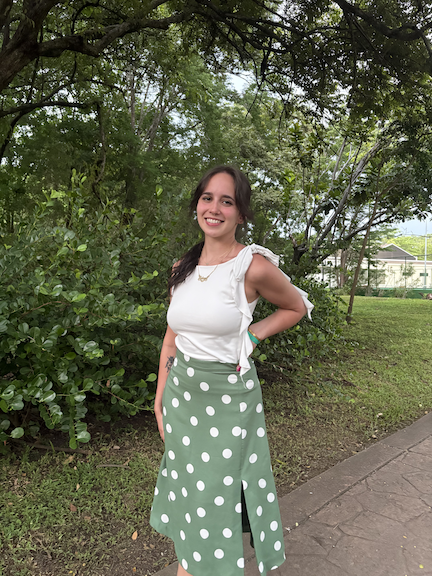

About Me
Hello! My name is Melanie Lopez-Castano. Welcome to my website!
I am from Louisville, Kentucky. My family is from Cuba, and growing up bilingual in both Spanish and English drew me towards linguistics and communication. I am a student at the University of Kentucky studying linguistics and CSD.

Education
Atherton High School (2018-2022)
University of Kentucky, Communication Sciences and Disorders & Linguistics (2022-Now)
Projects
AAC (All About Communication) Lab and Rehab Makerspace (2023) - Dr. Mary Jo Cooley Hidecker
Hobbies
I love....
- cooking
- music, movies, and reading
- crocheting
- my corgi, Rosie!
Contact
Visit my website or email me at mtlo230@uky.edu.